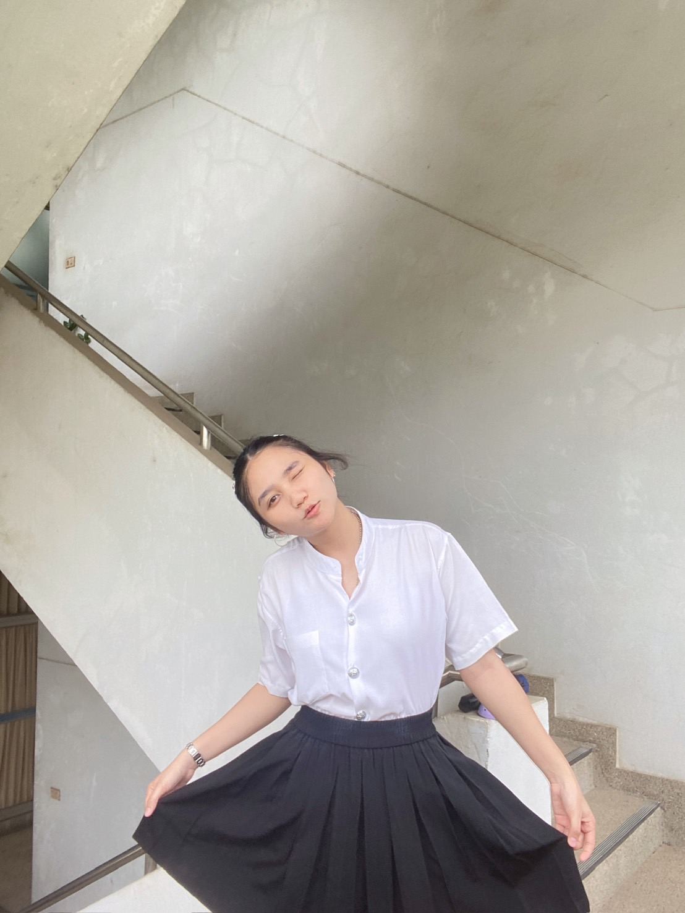

ประสบการณ์การศึกษาfavorite
ดิฉันได้รับการศึกษาที่โรงเรียนนารีวุฒิตั้งแต่ระดับชั้นอนุบาล 1 ถึงระดับชั้นมัธยมศึกษาปีที่ 6 ตั้งอยู่ที่ อ.บ้านโป่ง จ.ราชบุรี
โรงเรียนนารีวุฒิ (Narivooth
School) favorite
ในระดับชั้นมัธยมศึกษาตอนต้นดิฉันเรียนห้องโปรแกรมพิเศษ
SME เป็นโปรแกรมที่เน้นสอนทักษะวิชา วิทยาศาสตร์ คณิตศาสตร์และอังกฤษเป็นหลัก
ในระดับชั้นมัธยมศึกษาตอนปลายดิฉันได้เรียนห้องโปรแกรมพิเศษ Gifted
เป็นโปรแกรมที่เน้นสอนทักษาะวิชาคณิตศาสตร์ ทั้งคณิตศาตร์พื้นฐานและเพิ่มเติม
ทั้งระดับมัธยมศึกษาและระดับมหาวิทยาลัย อีกทั้งยังมีทักษะวิทยาศาสตร์ ฟิสิกส์ เคมี ชีวะ
ซึ่งวิชาที่เป็นรายการของโปรแกรมพิเศษ
จะมีอาจารย์จากมหาวิทยาลัยมาสอนให้โดยตรง และดิฉันได้จบการศึกษาปีสุดท้ายด้วยเกรดเฉลี่ยสะสม GPAX : 3.96
โดยดิฉันมีเกรดเฉลี่ยสะสมดังนี้
เกรดเฉลี่ยสะสม (GPAX)
- GPAX : 3.64
ระดับชั้นมัธยมศึกษาตอนต้นgrade
- GPAX : 3.81
ระดับชั้นมัธยมศึกษาตอนปลายgrade
มหาวิทยาลัยศิลปากร วิทยาเขตพระราชวังสนามจันทร์
(Silpakorn
University) favorite
ในระดับมหาวิทยาลัยดิฉันได้เข้ารับการศึกษาในคณะวิศวกรรมศาสตร์ สาขาอิเล็กทรอนิกส์และระบบคอมพิวเตอร์
มหาวิทยาลัยศิลปากร วิทยาเขตพระราชวังสนามจันทร์ ในปี 2564 ซึ่งเป็นรุ่นที่ 15
และปัจจุบันกำลังศึกษาต่ออยู่ในระดับชั้นปีที่ 4 โดยแต่ละเทอมมีเกรดเฉลี่ย
และเกรดเฉลี่ยสะสมในแต่ละเทอมดังนี้
- ภาคเรียนที่ 1 : 3.48
-
ภาคเรียนที่ 2 : 3.77
- GPAX : 3.63
ปีการศึกษาที่ 2564grade
- ภาคเรียนที่ 1 : 3.85
- ภาคเรียนที่ 2 : 3.77
- GPAX : 3.72
ปีการศึกษาที่ 2565grade
- ภาคเรียนที่ 1 : 3.83
- ภาคเรียนที่ 2 : 4.00
- GPAX : 3.79
ปีการศึกษาที่ 2565grade
ประสบการณ์การทำงานfavorite
ดิฉันได้มีโอกาสเข้ารับการฝึกงานที่การไฟฟ้าส่วนภูมิภาคอำเภอสามพราน
ตั้งอยู่ที่ 33/1 หมู่ 1 ถ.เพชรเกษมต.ท่าตลาด อ.สามพราน จ.นครปฐม
โดยแผนกที่ตัวดิฉันได้รับหน้าที่อยู่ในการไฟฟ้าสามพรานนี้ดิฉันฝึกอยู่แผนกมิเตอร์
โดยแผนกมิเตอร์ มีหน้าที่หลักๆคืออนุมัติจำหน่ายมิเตอร์และตรวจสอบดูแลรักษามิเตอร์
เพื่อป้องกันการชำรุดเสียหายหรือมีการปลอมแปลงเป็นหลัก
สิ่งที่ดิฉันได้รับจากการฝึกงานในครั้งนี้ดิฉันได้ทั้งความรู้และประสบการณ์ต่างๆไม่ว่าจะเป็นภายในสถานที่หรือภายนอกสถานที่ โดยหน้าที่ที่ฉันได้รับและความรู้ที่ได้รับมีดังนี้
หน้าที่ได้รับมอบหมายภายในsearch
-
ตรวจมิเตอร์
-
กรอกข้อมูลลงระบบ
หน้าที่ได้รับมอบหมายภายนอกsearch
-
ศึกษาเกี่ยวกับการสับเปลี่ยนมิเตอร์ระบบ AMI
-
นับคลังสินค้าเกี่ยวกับมิเตอร์ประเภทต่างๆ